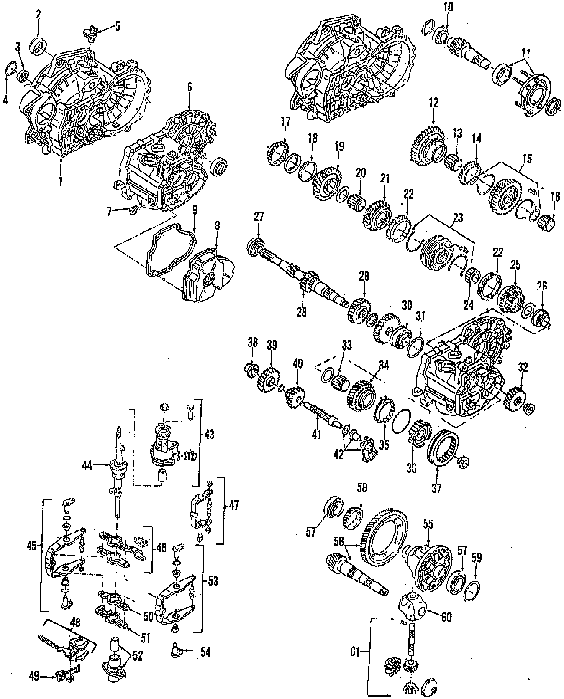

Operation CHARM
: Car repair manuals for everyone.
Home
>>
Volkswagen
>>
1997
>>
GTI (1H1) V6-2.8L (AAA)
>>
Parts and Labor
>>
Transmission and Drivetrain
>>
Manual Transmission/Transaxle
>>
Images
Images
5 Speed, Without 020 Trans:
